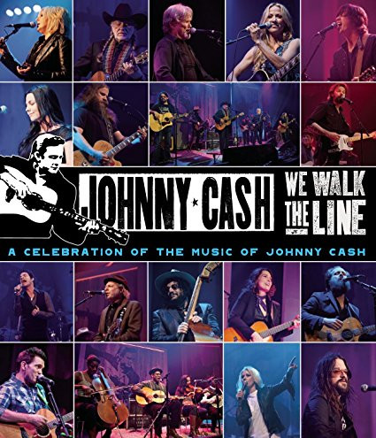

BLU-RAY
We Walk The Line: A Celebration Of The Music Of Johnny Cash
Various
Media: — · Sleeve: —
—
Personal
Discogs SuggestedCA$18.61
Discogs MedianCA$18.61
Discogs HighCA$18.61
- Physical Copy ID
- BB-BR-010
- Year
- 2012
- Label
- Legacy
- Catalog #
- 88725439769
- Country
- Europe
- Genre / Style
- Folk, World, & Country